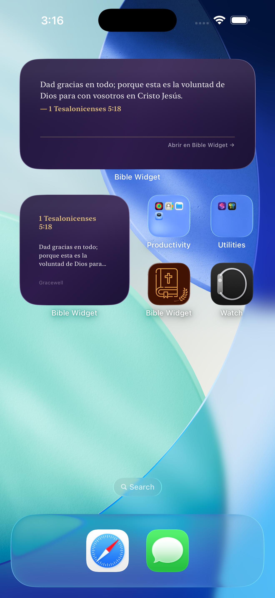
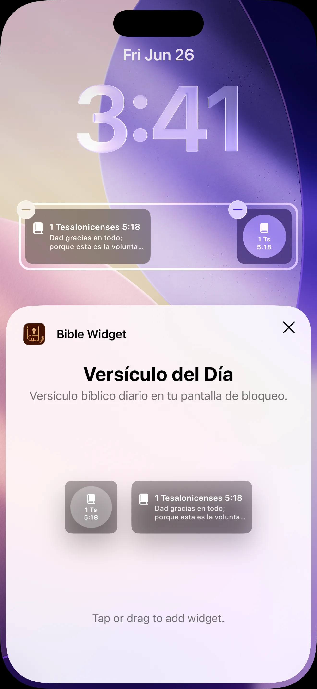
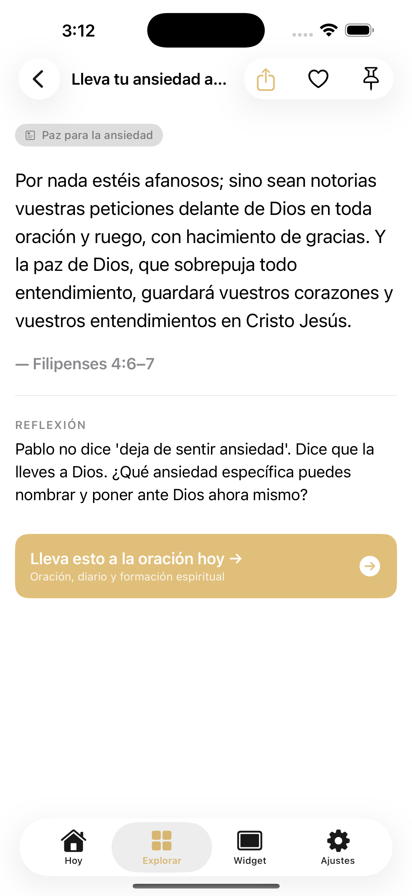

Versículo del Día · Bible Widget muestra un pasaje bíblico cuidadosamente seleccionado cada día en tu pantalla de inicio y pantalla bloqueada. Elige un tema, lee el pasaje completo en la app y conserva un ritmo diario sencillo en español o inglés.
Agrega la Escritura a tu pantalla de inicio o pantalla bloqueada en el tamaño que encaje con tu día. El versículo diario aparece automáticamente, y al tocar el widget se abre el pasaje completo en la app.
En lugar de versículos al azar, la app se centra en pasajes elegidos para temporadas reales de fe: ansiedad, esperanza, gratitud, perdón, descanso, rendición y más.


